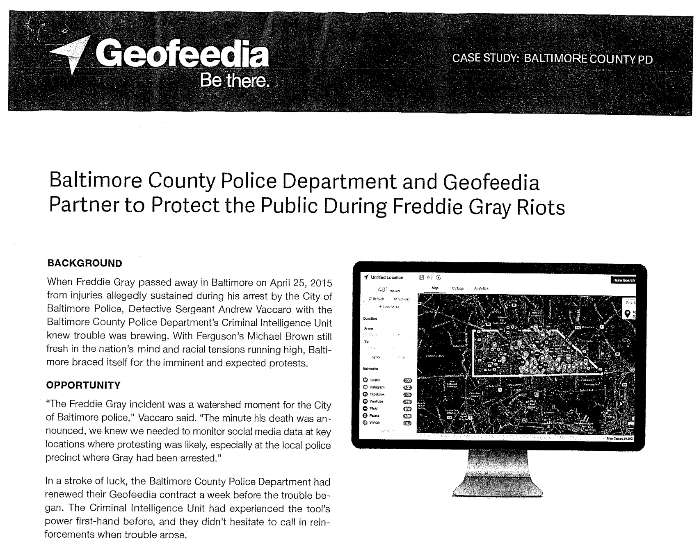

Over 225 police departments have partnered with Amazon to have access to Amazon’s video footage obtained as part of the “smart” doorbell product Ring, and in many cases these partnerships are heavily subsidized with taxpayer money. Police departments are allowing Amazon to stream 911 call information directly in real-time, and Amazon requires police departments to read pre-approved scripts when talking about the program. If a homeowner doesn’t want to share data from their video camera doorbell with police, an officer for the Fresno County Sheriff’s Office said they can just go directly to Amazon to obtain it. This creation of an extensive surveillance network, the murky private-public partnership surrounding it, and a lack of any sort of regulations or oversight is frightening. And this is just one of many examples related to surveillance technology that have recently come to light.
I frequently talk with people who are not that concerned about surveillance, or who feel that the positives outweigh the risks. Here, I want to share some important truths about surveillance:
- Surveillance can facilitate human rights abuses and even genocide
- Data is often used for different purposes than why it was collected
- Data often contains errors
- Surveillance typically operates with no accountability
- Surveillance changes our behavior
- Surveillance disproportionately impacts the marginalized
- Data privacy is a public good
- We don’t have to accept invasive surveillance
While I was writing this post, a number of investigative articles came out with disturbing new developments related to surveillance. I decided that rather than attempt to include everything in one post (which would make it too long and too dense), I would go ahead and share the above facts about surveillance, as they are just a relevant as ever.
The last 24 hours:
— Rachel Thomas (@math_rachel) August 2, 2019
- NYC police using facial recognition on 11 year old kids
- Cops are giving Amazon real-time 911 caller data
- California Facial Recognition Interconnect
- contd facial rec on protesters in Hong Kong
- Palantir founder Peter Thiel gets op-ed in NYTimes
- Surveillance can facilitate human rights abuses and even genocide
There is a long history of data about sensitive attributes being misused, including the use of the 1940 USA Census to intern Japanese Americans, a system of identity cards introduced by the Belgian colonial government that were later used during the 1994 Rwandan genocide (in which nearly a million people were murdered), and the role of IBM in helping Nazi Germany use punchcard computers to identify and track the mass killing of millions of Jewish people. More recently, the mass internment of over one million people who are part of an ethnic minority in Western China was facilitated through the use of a surveillance network of cameras, biometric data (including images of people’s faces, audio of their voices, and blood samples), and phone monitoring.

Pictured above is Adolf Hitler (far left) meeting with IBM CEO Tom Watson Sr. (2nd from left), shortly before Hitler awarded Watson a special “Service to the Reich” medal in 1937 (for a timeline of the Holocaust, see here). Watson returned the medal in 1940, although IBM continued to do business with the Nazis. IBM technology helped the Nazis conduct detailed censuses in countries they occupied, to thoroughly identify anyone of Jewish descent. Nazi concentration camps used IBM’s punchcard machines to tabulate prisoners, recording whether they were Jewish, gay, or Gypsies, and whether they died of “natural causes,” execution, suicide, or via “special treatment” in gas chambers. It is not the case that IBM sold the machines and then was done with it. Rather, IBM and its subsidiaries provided regular training and maintenance on-site at the concentration camps: printing off cards, configuring machines, and repairing them as they broke frequently.
- Data is often used for different purposes than why it was collected
In the above examples, the data collection began before genocide was committed. IBM began selling to Nazi Germany well before the Holocaust (although continued for far too long), including helping with Germany’s 1933 census conducted by Adolf Hitler, which was effective at identifying far more Jewish people than had previously been recognized in Germany.
It is important to recognize how data and images gathered through surveillance can be weaponized later. Columbia professor Tim Wu wrote that “One [hard truth] is that data and surveillance networks created for one purpose can and will be used for others. You must assume that any personal data that Facebook or Android keeps are data that governments around the world will try to get or that thieves will try to steal.”
Plenty of data collection is not involved with such extreme abuse as genocide; however, in a time of global resurgence of white supremacist, ethno-nationalist, and authoritarian movements, it would be deeply irresponsible to not consider how data & surveillance can and will be weaponized against already vulnerable groups.
- Data often has errors (and no mechanism for correcting them)
A database of suspected gang members maintained by California law enforcement officials was found to be full of errors, including 42 babies who had been added to the database when they were less than 1 year old (28 of whom were marked as “admitting to being gang members”). Even worse, there was no process in place for correcting mistakes or removing people once they’ve been added.
An NPR reporter recounts his experience of trying to rent an apartment and discovering that TransUnion, one of the 3 major credit bureaus, incorrectly reported him as having two felony firearms convictions. TransUnion only removed the mistakes after a dozen phone calls and notification that the story would be reported on. This is not an unusual story: the FTC’s large-scale study of credit reports in 2012 found 26% of consumers had at least one mistake in their files and 5% had errors that could be devastating. An even more opaque, unregulated “4th bureau” exists: a collection of companies buying and selling personal information about people on the margins of the banking system (such as immigrants, students, and people with low incomes), with no standards on what types of data are included, no way to opt out, and no system for identifying or correcting mistakes.
- Surveillance typically operates with no accountability
What makes the examples in the previous section disturbing is not just that errors occurred, but that there was no way to identify or correct them, and no accountability for those profiting off the error-laden data. Often, even the existence of the systems being used is not publicly known (much less details of how these systems work), unless discovered by journalists or revealed by whistleblowers. The Detroit Police Dept used facial recognition technology for nearly two years without public input and in violation of a requirement that a policy be approved by the city’s Board of Police Commissioners, until a study from Georgetown Law’s Center for Privacy & Technology drew attention to the issue. Palantir, the defense startup founded by billionaire Peter Thiel, ran a program with New Orleans Police Department for 6 years which city council members did not even know about, much less have any oversight.
After two studies found that Amazon’s facial recognition software produced inaccurate and racially biased results, Amazon countered that the researchers should have changed the default parameters. However, it turned out that Amazon was not instructing police departments that use its software to do this either. Surveillance programs are operating with few regulations, no oversight, no accountability around accuracy or mistakes, and in many cases, no public knowledge of what is going on.
- Surveillance changes our behavior
Hundreds of thousands of people in Hong Kong are protesting an unpopular new bill which would allow extradition to China. Typically, Hong Kong locals use their rechargeable smart cards to ride the subway. However, during the protests, long lines of people waited to use cash to buy paper tickets (usually something that only tourists do) concerned that they would be tracked for having attended the protests. Would fewer people protest if this was not an option?
In the United States, in 2015 the Baltimore Police Department used facial recognition technology to surveil people protesting the death of Freddie Grey, a young Black man who was killed in police custody, and arrested protesters with outstanding warrants. Mass surveillance could have a chilling impact on our rights to move about freely, to express ourselves, and to protest. “We act differently when we know we are ‘on the record.’ Mass privacy is the freedom to act without being watched and thus in a sense, to be who we really are,” Columbia professor Tim Wu wrote in the New York Times.

- Surveillance disproportionately impacts those who are already marginalized
Surveillance is applied unevenly, causing the greatest harm to people who are already marginalized, including immigrants, people of color, and people living in poverty. These groups are more heavily policed and surveilled. The Perpetual Line-Up from the Georgetown Law Center on Privacy and Technology studied the unregulated use of facial recognition by police, with half of all Americans appearing in law enforcement databases, and the risks of errors, racial bias, misuses, and threats to civil liberties. The researchers pointed out that African Americans are more likely to appear in these databases (many of which are drawn from mug shots) since they are disproportionately likely to be stopped, interrogated, or arrested. For another example, consider the contrast between how easily people over 65 can apply for Medicare benefits by filling out an online form, with the invasive personal questions asked of a low-income mother on Medicaid about her lovers, hygiene, parental shortcomings, and personal habits.
In an article titled Trading privacy for survival is another tax on the poor, Ciara Byrne wrote, “Current public benefits programs ask applicants extremely detailed and personal questions and sometimes mandate home visits, drug tests, fingerprinting, and collection of biometric information… Employers of low-income workers listen to phone calls, conduct drug tests, monitor closed-circuit television, and require psychometric tests as conditions of employment. Prisoners in some states have to consent to be voiceprinted in order to make phone calls.”
- Data privacy is a public good, like air quality or safe drinking water
Data is more revealing in aggregate. It can be nearly impossible to know what your individual data could reveal when combined with the data of others or with data from other sources, or when machine learning inference is performed on it. For instance, as Zeynep Tufekci wrote in the New York Times, individual Strava users could not have predicted how in aggregate their data could be used to identify the locations of US military bases. “Data privacy is not like a consumer good, where you click ‘I accept’ and all is well. Data privacy is more like air quality or safe drinking water, a public good that cannot be effectively regulated by trusting in the wisdom of millions of individual choices. A more collective response is needed.”
Unfortunately, this also means that you can’t fully safeguard your privacy on your own. You may choose not to purchase Amazon’s ring doorbell, yet you can still show up in the video footage collected by others. You might strengthen your online privacy practices, yet conclusions will still be inferred about you based on the behavior of others. As Professor Tufekci wrote, we need a collective response.
- We don’t have to accept invasive surveillance
Many people are uncomfortable with surveillance, but feel like they have no say in the matter. While the threats surveillance poses are large, it is not too late to act. We are seeing success: in response to community organizing and an audit, Los Angeles Police Department scrapped a controversial program to predict who is most likely to commit violent crimes. Citizens, researchers, and activists in Detroit have been effective at drawing attention to the Detroit Police Department’s unregulated use of facial recognition and a bill calling for a 5-year moratorium has been introduced to the state legislature. Local governments in San Francisco, Oakland, and Somerville have banned the use of facial recognition by police.
For further resources, please check out: - Georgetown Law Center on Privacy and Technology - Digital Defense Playbook